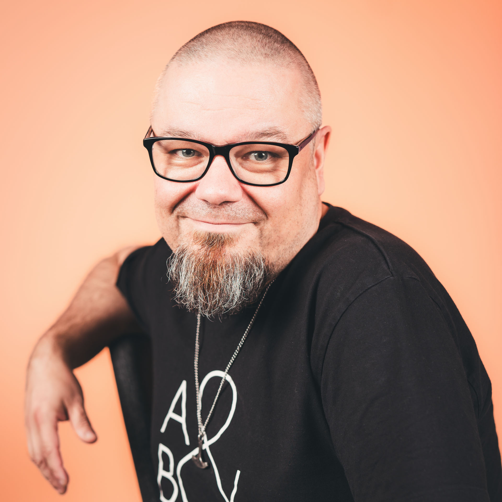

Kuka olen?
Olen Teemu Kankainen, Aava & Bang Oy:n ja Bottiverstaan tekoälyjohtaja. Johdan työkseni 70 hengen asiantuntijayrityksen tekoäly-yksikköä. Minulla on reilun 20 vuoden kokemus johtamisesta ja digitalisaatiosta. Olen perustanut 2000-luvun alussa mainostoimiston, mistä on vuosien varrella kasvanut kokonaisvaltainen B2B-kasvukumppani. Johtamisen lisäksi osaamiseeni kuuluu erilaisten tekoälyratkaisujen speksaaminen yhdessä tiimini kanssa. Tarjoamiimme palveluihin kuuluu perinteisten bottiratkaisujen lisäksi isommat transformaatiohankkeet, missä tekoälyratkaisujen lisäksi valmennetaan henkilöstöä käyttämään hyödyksi erilaisia ratkaisuja oman työn tukena. Opiskelen VAMK:issa YAMK-tutkintoa. Olen täällä oppimassa vanhaa ja uutta. Aina voi saada tutustakin asiasta uusia näkökulmia.
Käy tsekkaamassa omat kotisivuni osoitteessa Bottiverstas.

Tämä sivu täyttää tehtävän e-osion vaatimuksen, jossa kokonaisuuteen on liitetty toinen sivusto index.html-tiedoston lisäksi.